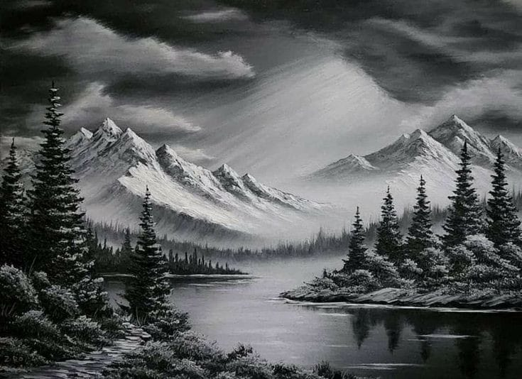
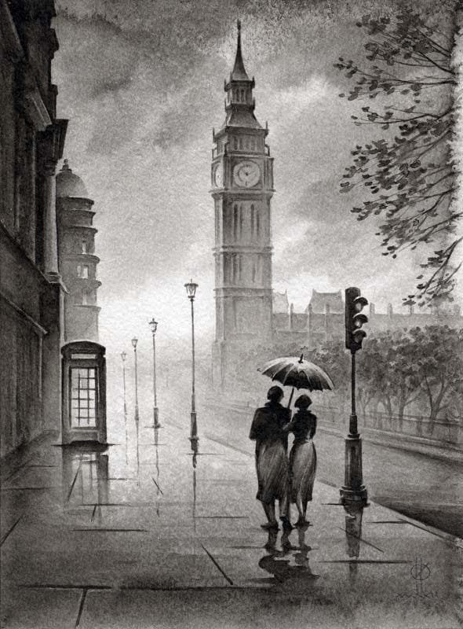

Dibujo de Paisajes
El dibujo de paisajes es una disciplina que invita a los artistas a explorar y capturar la belleza del mundo que les rodea, ya sea en entornos naturales o en escenas urbanas. A través de esta práctica, el artista se convierte en un observador atento de la naturaleza y la arquitectura, traduciendo la complejidad del entorno en líneas, formas, y tonos sobre el papel.
Este tipo de dibujo puede abarcar desde una representación precisa y detallada de la realidad hasta una interpretación más libre y abstracta, donde la emoción y la atmósfera juegan un papel predominante. En un enfoque realista, se busca retratar con exactitud los detalles visibles, como la textura de los árboles, el reflejo del agua, o la estructura de los edificios, utilizando técnicas que logran un alto grado de verosimilitud. El objetivo es transportar al espectador al lugar representado, permitiéndole sentir la quietud de un bosque, la vastedad de una montaña, o la vibrante energía de una ciudad.

Por otro lado, un enfoque abstracto en el dibujo de paisajes permite al artista interpretar el entorno de una manera más subjetiva. Aquí, las formas pueden ser simplificadas o distorsionadas, y los colores y trazos pueden ser utilizados para evocar sensaciones más que para describir el mundo tal como se ve. Este estilo se enfoca en capturar la esencia o el espíritu de un lugar, en lugar de sus detalles físicos precisos. Un paisaje abstracto puede transmitir la serenidad de un campo abierto o el caos de una metrópoli, a través de la composición, el uso del espacio, y la manipulación de la luz y el color.
El dibujo de paisajes también es una excelente oportunidad para experimentar con la composición. Decidir cómo distribuir los elementos en la escena es clave para dirigir la mirada del espectador y crear una obra equilibrada y estéticamente atractiva. Por ejemplo, el uso de la regla de los tercios puede ayudar a evitar composiciones planas, mientras que la perspectiva añade profundidad y dinamismo, haciendo que el dibujo parezca extenderse más allá de los bordes del papel.
